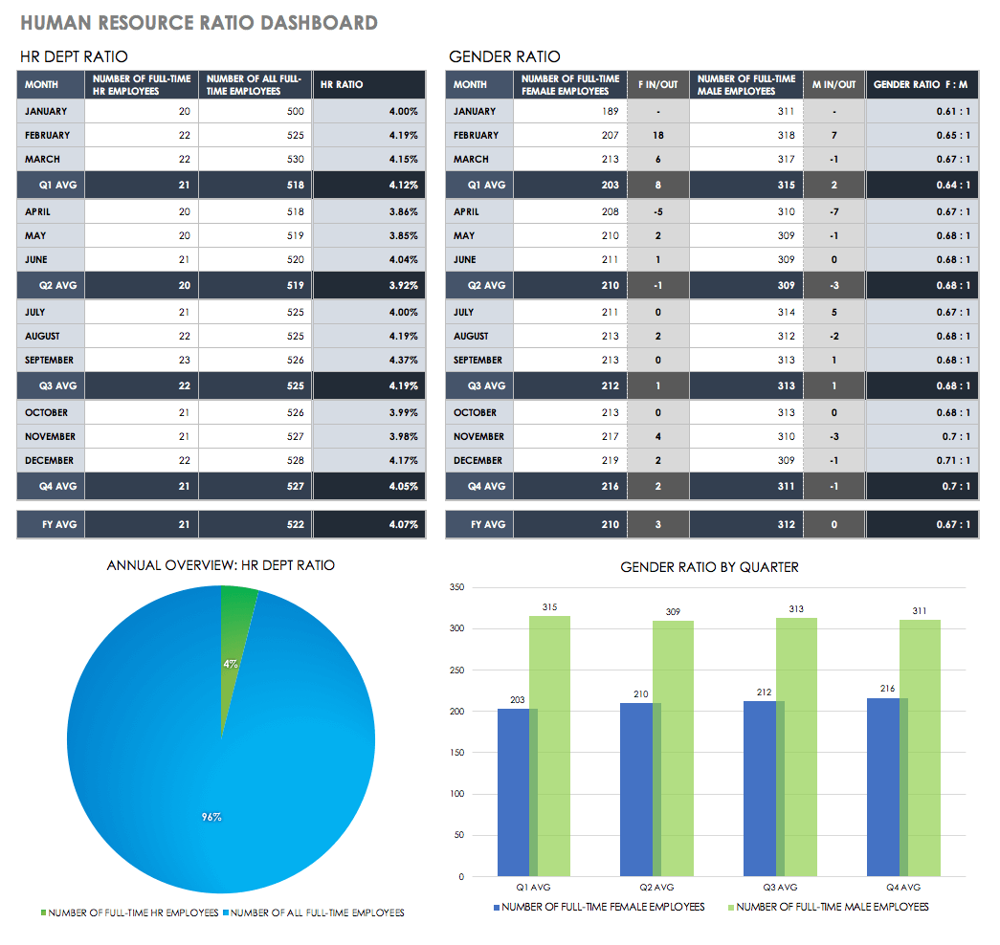
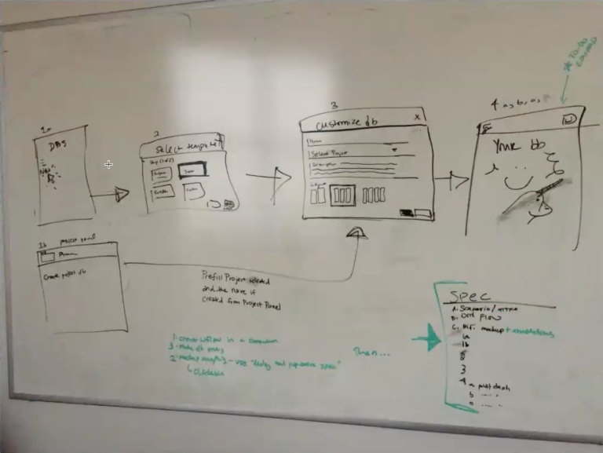
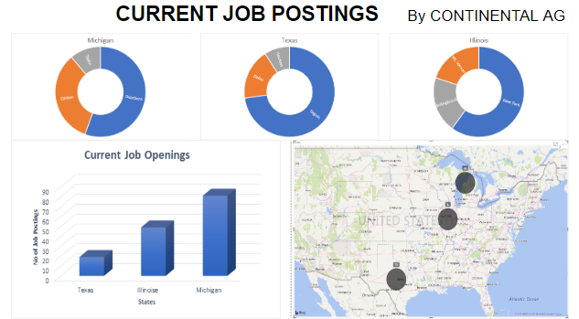

Enterprise UX Case Study: Improving Usability Under Tight Deadlines
Client: Continental Tires
Activities
Conducted User Interviews
Constructed Personas
Drafted Wireframes
Built Prototypes
Problem
Continental Tires needed to help users create dashboards more effectively & quickly. The old process required creating dashboards, and all the widgets within, completely from scratch. The team’s goal was creating a “one-click solution”
where the user could create a useful dashboard right away without any configuration.
 Above, you can see how they did it.
Roles
User Research, UX Design, UI Design, Data Modelling
Time
13 Weeks
Setting the Context
Before getting into the actual process, let’s examine the user groups and project goals.
Tools Used:
User Survey (52 Responses)
User Interviews (5)
Surveys
Comparative Analysis
User Scenarios
As a business analyst, I can view the stored and visualized data to analyze critical issues and make business decisions.
As a data analyst, I would be able to view the dashboard to view different aspects and insights of the scraped data.
As the HR Manager i would like to monitor all ongoing campaigns and operations.
Project Goals
The following quantitative and qualitative goals would define project success for the dashboard template feature:
Increase usage of dashboards within 30 days of release. Using Heap to track in-app events, they discovered the friction in creating dashboards was holding the whole product.
Grant immediate access to project critical information. It wasn’t just about quality, it was about speed. We needed to streamline access to data.
Finish the project in 3 months. Starting in Sept. 2018, the launch for the pilot was set for early December, giving the team a compressed timeline to craft the right solution.
Before the actual legwork started, the team gathered for a brainstorming/research session. Examining in-app patterns from Heap, the team categorized the most commonly-created dashboards:
Project Dashboards
Campaign Dashboards
Team Dashboards

Brainstorming Session
We sketched out some of our ideas on the whiteboard. These mostly involved user flow charts, drawing out the pace of the experience screen by screen. The user flows formed the foundation that would eventually grow into the perfect solution
for the dashboard problem.
Tools Used:
Paper & Visio Wireframes
Sketch
User Journey
User Flow
Creating & Testing Mid-Fidelity Flows
Immediately following the whiteboard session, I used Adobe Creative Suite & Power BI to create mid-fidelity versions of the white board sketches. These mid-fi flows become the key to the intermediary stage of internal testing before hi-fi prototyping
and testing with users.
For initial, early-stage feedback, We showed the mid-fi user flows to 12 Users. We administered these casual tests individually, explaining the problem and collecting feedback on the proposed redesign for the dashboard creation process.. The informal
testing also gave him a chance to answer his own personal questions and concerns. Ultimately, the tests proved successful: the absence of bad feedback is still good feedback.
here

here
here
Tools Used:
Visio
Sketch
Usability testing
High Fidelity Prototypes
Since the goal of creating a prototype is to test your design decisions, the first step was outlining desired insights in a usability testing plan.The usability testing plan also included sections such as the test script and a list of user tasks.
This document prioritized test goals for the most important user actions:
Validate that people know how to create a new dashboard.
Validate the 3 default testing templates are useful options (Project, Campaign, Team).
Validate that created dashboards are discoverable from within the project.
Since the new design needed to be intuitive without confusing current users, I actually chose a left-handed tabbed format versus the multi-step process the team initially sketched. I realized the choice was simpler for his team to implement while
also benefiting users. Designers wouldn’t need to create playful icons, developers wouldn’t need to build a multi-step wizard, and users could select their dashboard type faster with fewer steps.
here
here
Design highlights
The UI design was made to be easy on the eye, because Users would typically work with the Core Banking system for majority of their work day. Thus the design should be neutral. UI customization in the future was also made possible.The system
supported multiple languages, locales, permissions and keyboard navigation (designed and tested). The web application was designed for desktop and large screens and had a responsive layout with two breakpoints: 1024 px and 1200 px.
Usability Testing & Iteration
The team conducted remote, moderated usability tests with 24 people. I moderated the testing sessions, while another team member observed and took notes. We tested two main scenarios: creating a dashboard, and finding an existing dashboard in
the project. Test results were quickly iterated into a new version, which was then likewise tested and the results reiterated, until the team came up with the proven, ideal design.
Usability testing revealed the design worked well as a system:
Users found the tabbed layout easy to use and understand when creating dashboards from templates.
Users mentioned the default testing templates were useful and matched their needs.
While most users found the default widgets useful, some mentioned how they’d prefer different widgets due to personal preferences. For example, some users didn’t find the “Remaining Work” linechart widget useful. Others wanted the ability to save their
customizations to the templates.
Users did experience some difficulty in accessing a dashboard once created.
I spent considerable time with the program manager to map out the patterns of feedback to consolidate insights. To improve findability of newly-created dashboards, We decided to increase negative space around the “View Project Dashboard” label
inside their details panel view. Further improvements, such as the ability to save widget edits, were earmarked for later testing, since they were fell outside the scope of the MVP.
Development and Launch
Following the Agile process, development sprints immediately followed the design sprints. Even as Our team was still testing prototypes, developers were already building the validated iterations.
Because the new feature tested well, the Client launched the dashboard template feature live to users without beta testing.While the team runs beta tests for larger features, they needed to get the feature out the door since dashboard creation
was so difficult before. Thanks to efficient hi-fi prototyping and close collaboration, the team launched the new feature on schedule and within scope. The initial results are promising:
The template feature is responsible for 75% of new dashboards created in the app.
A majority of large enterprise customers already use and enjoy the new feature, as it facilitates their large, complex projects.
Of all the dashboards created, 10% were created 2 weeks after launch..